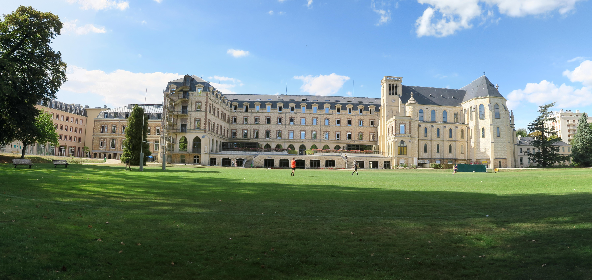

Le lycée Sainte Geneviève - BJ, pour les intimes - a été fondé par une communauté jésuite en 1854 et est installé à Versailles depuis 1913. Le cadre est exceptionnel. L'école dispose d'un parc très bien entretenu, de multiples terrains de sport et de nombreux bâtiments récemment rénovés. Mais à Ginette, l'enseignement que vous suivrez ne se limitera pas uniquement au cadre scolaire. Une grande attention est accordée au développement personnel et à l'épanouissement de chacun. Tu vivras certainement ici les deux meilleures années de ta vie, durant lesquelles tu forgeras des amitiés fortes, à la lumière de la devise de l'école : SERVIR.
L'établissement compte aujourd'hui près de 900 élèves, toutes classes confondues. L'internat est obligatoire pour tous les étudiants, à l'exception de ceux de Versailles. Mais l'expérience montre qu'eux-mêmes préfèrent être internes en semaine.
En première année, les garçons partagent leur chambre avec un autre garçon. Les filles trouveront dans ces mêmes chambres des bureaux « de jour » pour travailler. En revanche, elles se dirigeront chaque soir vers leur bâtiment pour y passer la nuit. Cela permet de découvrir les autres et de développer l’entraide et la solidarité, valeurs chères à Ginette. L’esprit co est en effet l'une des principales raisons du succès de notre établissement. En seconde année, chaque élève dispose d'une chambre individuelle, eu égard à l'approche des concours.
L'esprit co, c'est la marque de Ginette, celle qui la rend unique. Ici, on veille les uns sur les autres et l'entraide est notre mot d'ordre. Chacun sait se mettre à l'écoute, apprendre de l'expérience des autres et partager la sienne.
Tu prendras des responsabilités lorsque tu auras choisi ton "CD". Il correspondra à une tâche qui te sera confiée et qui t'accompagnera toute ta sup. Elle te permettra de participer activement au bien-être de ta classe. Tu pourras ainsi apporter ton originalité pour compléter l'unité de ta classe.
A Ginette, le sport est une vieille tradition. Quelle que soit ta filière, tu seras amené à partiquer un sport, que ce soit pour t'entraîner, ou simplement pour te changer les idées. Si tu te sens l'âme d'un joueur de rugby ou d'un danseur de zumba, viens te défouler dans une ambiance inédite. De nombreuses activités te seront proposées. Tu trouveras ton bonheur. Ce sera également l'occasion pour toi de t'illustrer lors de matchs interclasses notamment.
Si te vautrer dans la boue ou courir après un ballon ne t'intéresse pas, tu peux t'engager dans une activité sociale. Il te sera proposé de faire du soutien scolaire ou encore de visiter des personnes agées... Tu vivras ainsi pleinement la devise de l'école ! Ce sera l'occasion pour toi de faire de nouvelles rencontres et de souffler un peu.
D'autres activités comme le théâtre, l'orchestre ou la chorale sont également proposées. Tu pourras y développer ta sensibilité artistique. De nombreux concerts et conférences seront organisés tout au long de l'année.